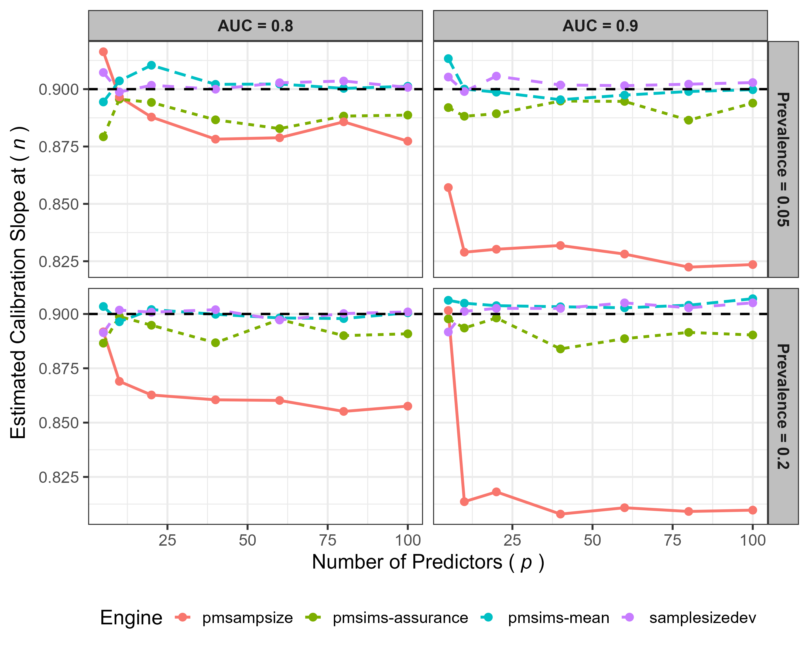

Two new papers on sample size for prediction models
We have recently released two papers from the project. One introduces the problem of sample size for prediction modelling and describes the approach we’ve taken in the pmsims package. The other describes how well the package works.
Before building a prediction model, researchers have to decide how many people’s data they need. With too little data, a model can look convincing on the data used to build it and then perform poorly for new patients. The problem is often invisible until the tool is already being used.
A common way of answering this question is a formula. Formulas are quick, and for standard regression models they work well. But they rest on assumptions that often don’t hold in real clinical data: that the model has been specified correctly, and that the predictors behave neatly. They also don’t extend to the machine learning methods researchers increasingly use.
Paper 1: what counts as enough data
The first paper, led by Diana Shamsutdinova, reviews the existing methods and draws a distinction between two ways of asking the sample size question.
The first way asks how much data is needed for the model to perform well on average. The second asks how much data is needed for it to perform well most of the time (for example, in eight cases out of ten). The second target is harder and usually requires more data.
pmsims can answer either. Rather than relying on a formula, it simulates both the data and the fitting of the model: it generates a population, draws a dataset of a given size from it, fits the model, measures how well the model does, and repeats. Doing that exhaustively for every possible sample size would take a very long time, so pmsims uses a Gaussian process — a statistical method for estimating the shape of a curve from a small number of points — to decide which sample sizes are worth trying next.
Shamsutdinova D, Zimmer F, Olaniran OR, Markham S, Stahl D, Forbes G, Carr E. Sample size calculations for developing clinical prediction models: overview and pmsims R package. Preprint. Free to read.
Paper 2: testing the package
The second paper, led by Ridwan Olaniran and published in BMC Medical Research Methodology, evaluates how well the sample size engine in pmsims works. The study considered binary yes/no outcomes, continuous outcomes such as blood pressure, and time-to-event outcomes such as time until relapse.
We checked two things. First, whether the Gaussian process search is stable: if you run it repeatedly on the same problem, does it give you a similar answer each time? It was the most stable of the three search strategies we’ve implemented, and its lead grew as the problem got harder — a weak signal spread across many predictors.
Second, whether the sample sizes it recommends are the right ones. We took the recommendation, built models at that size, and checked them on fresh data. The models performed close to the targets, across all three outcome types.
We also compared pmsims against two existing tools, pmsampsize and samplesizedev. In the more straightforward settings all three broadly agreed. They parted company when the model being planned was expected to predict well — that is, to separate patients who go on to have the outcome from those who don’t. pmsampsize uses an analytic formula rather than simulation, and in that setting the formula recommended smaller samples than the simulations did; models built at those sizes fell short of the target.

Olaniran OR, Shamsutdinova D, Markham S, Zimmer F, Stahl D, Forbes G, Carr E. Adaptive Gaussian process search for simulation-based sample size estimation in clinical prediction models: validation of the pmsims R package. BMC Medical Research Methodology, 13 July 2026. Free to read.
The package
The package itself is at pmsims-package.github.io/pmsims, and it’s free to use. If you try it, we’d like to hear how you get on — particularly if something doesn’t work as you expect.